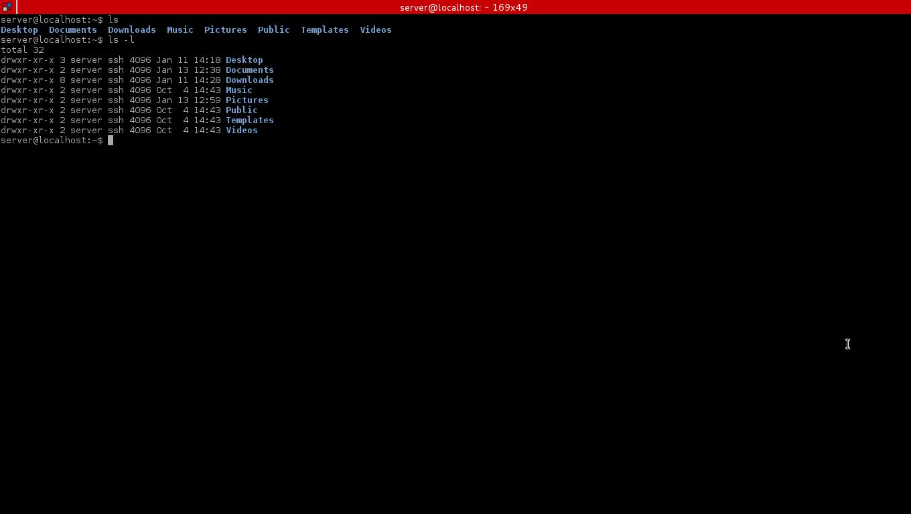

Migrating from Windows
Tips and tricks for Windows refugees
Those of us who have been Linuxers for a while now can look back on the old days that we spent using Windows thinking that Windows was the only OS besides MAC. Then we discovered that in fact, its quite the opposite. There are way more Linux distributions than there are Windows versions and MAC versions combined, and they all have their ups and downs.
There are many differences between Windows and Linux, but there are also many similarities. We will discuss the main differences and similarities and why you might want to come over to the Tux side.
What is Linux?
So if you have read this far then you know that there are more operating systems than just Windows and MAC. You have discovered the rapidly growing world of open source software. Linux is an open source operating system kernel developed by Linus Torvolds in the 1990s and he actually wasn’t expecting how it would change the world as most of the internet runs on his kernel. Most website servers use Linux for web-hosting, but it wasn’t until recently around 2005 that Linux started “going mainstream”. Now, most Linux distributions come with a full software arsenal for office, web searching, email, and most recently, games.
Main differences between Windows and Linux
- Linux is free, windows is not.
- Windows requires an anti-virus, Linux does not.
- Window’s source code is closed, Linux’s source code is open.
- Linux can’t run Windows software out of the box.
- Windows was more user friendly but that has changed in the past years.
Linux requires a learning curve to get used to, but once you know the basics you will see how versatile and fast Linux can be.
Main similarities between Windows and Linux
- They are both internet capable
- Linux has a Desktop Environment like Windows (It just looks different.)
Notice how the similarities list is very short. That is because they are actually very different under the hood.
What should I know coming from Windows?
The package manager
People switching from Windows should become familiar with the concept of not going to the internet to download all of their software. All Linux distros come with a Package Manager. A package manager is pretty much like an apps store, it is where you will get most of your software. You have to get out of the habit of going to a third party website and downloading “.exe” files. This is a good thing and a bad thing. The good thing is that you can rest assured that the software in your package manager is safe. For this and other reasons, Linux doesn’t really need an anti-virus program.
The Terminal (dun dun duuuunnnnn!!)

The Terminal, the bane of Linux beginners. The terminal is the same as the CMD in Windows. For those who don’t know the Terminal/CMD is that scary black screen with the blinking cursor that “computer geniuses” use to give commands directly to the computer. If you’re going to use Linux, I urge you to become at least familiar with the basics of this powerful tool. But with today’s user friendly disrtos, that is not necessary, just recommended.
The Linux kernel
The kernel is where all of the magic happens. The kernel is the software that talks directly to your hardware, and does everything needed to keep your computer running. The kernel runs at a low level known as Kernel Space. Here the operating system manages its resources such as what programs have access to the CPU at what time, and allocating memory accordingly. But this is all stuff to learn after you learn how to use the basic features of Linux. You will never learn everything but that shouldn’t stop you from trying!!